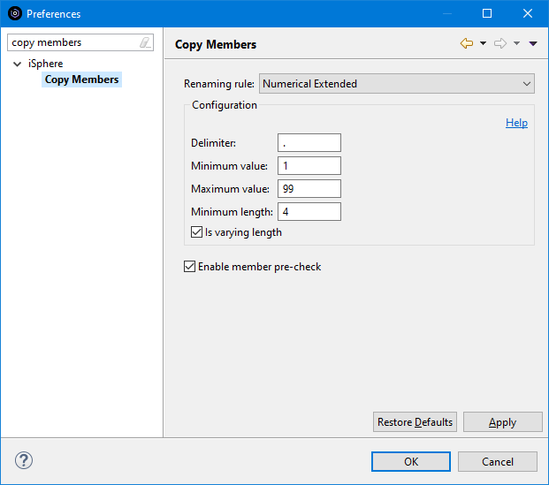

The available rules are:
The available options are:
| Enable member pre-check | - | Specifies whether members are checked before starting the copy process. When this option is disabled, errors such as Target member already exists are reported at the end of the copy process. |